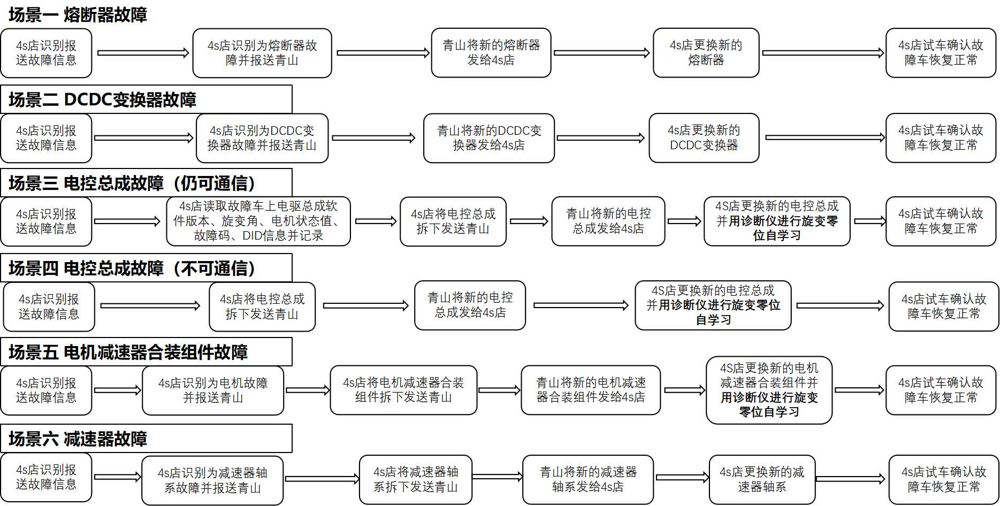

典型维修场景

旋变零位自学习方法与注意事项：
注意：整个旋变自学习过程中，要进行自学习电驱总成连接的驱动轮附近、车辆前后区域均不能有任何异物和人员！
1、将整个车辆举升，车轮均完全离地即可；
2、整个旋变自学习过程中：要进行自学习电驱总成连接的两个车轮均须处于可自由转动状态；期间不能踩制动踏板，如自学习的为后驱动，需释放EPB；如自学习的为前驱动，方向盘需居中；
3、整个旋变自学习过程中：车辆须一直处于P挡；
4、将车辆上高压，以上均确认无误后，使用诊断仪链接车辆并进入电机控制器板块，进入空载自学习功能并开启，等待约45S确认诊断仪反馈自学习成功；如反馈自学习失败，请重新确认如上内容再次尝试。